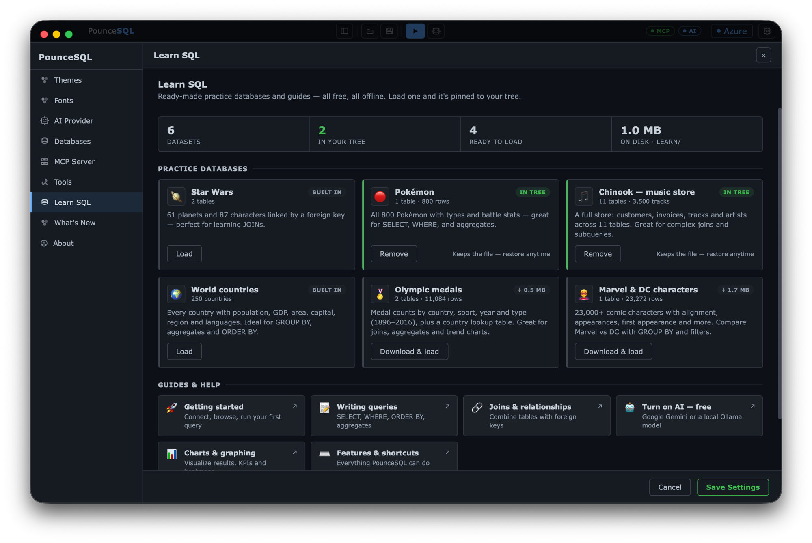

Load any with one click in Settings → Learn SQL, or grab the raw files from the public repo — credits & example queries included.
61 planets and 87 characters, linked by a foreign key — perfect for learning JOINs.
"Which characters are from Tatooine?"
Data from alexisrolland/star-wars-data (SWAPI). Inspired by Cockroach Labs and the starwarsdb R package.
All 800 Pokémon with types and battle stats — great for SELECT, WHERE, ORDER BY,
and aggregates.
"Show the strongest Water types."
The classic Kaggle Pokémon dataset. Learning ideas from TempeHS, Yi Zheng, and lucvalsal.
A full digital music store — customers, invoices, tracks, albums and artists across 11 tables.
Great for complex joins and subqueries. Loaded by default.
"Which artist earned the most revenue?"
The Chinook sample database (MIT licensed).
All 250 countries with population, GDP, area, capital, region and languages — the perfect
playground for GROUP BY and aggregates.
"Rank continents by total population."
Country data from mledoze/countries (MIT); population & GDP from the World Bank (CC BY 4.0).
Medal counts by country, sport, year and type from 1896–2016, plus a country lookup table.
Superb for joins and trend charts.
"Chart USA golds by year."
olympics.db ↓ · per-medal detail ↓
From the 120 years of Olympic history dataset (originally compiled by Sports Reference).
23,000+ comic characters with alignment, appearances and first appearance — compare
Marvel vs DC with GROUP BY and filters.
"Who has the most appearances?"
FiveThirtyEight's comic-characters data (CC BY 4.0), from the Marvel & DC wikis.
More on the way. Want one, or have data to share? Join the discussion →
No files to move, no setup — everything installs into ~/Documents/pouncesql/learn and pins to your tree.

Prefer to do it by hand? Download a .db from the Databases tab, then use Add → SQLite → Browse… in the tree.
Tip: right-click any table to preview rows, count them, or generate a starter query.
The AI is optional and off until you add a provider. Both of these are free.
gemini-2.5-flash and start chatting. Free-tier limits are generous for learning.brew install ollama).ollama pull qwen2.5-coderhttp://localhost:11434.Prefer the big models? A few dollars of OpenAI or Anthropic credits go a long way.
Paste each query into the editor and hit Run (⌘↵), or ask the AI. Work top to bottom — every lesson builds on the last.
SELECT chooses columns, WHERE filters rows, ORDER BY sorts, LIMIT caps the count. Find the ten hardest-hitting Fire types:
SELECT name, type1, attack FROM pokemon WHERE type1 = 'Fire' ORDER BY attack DESC LIMIT 10;
Try next: change 'Fire' to 'Water', or sort by speed.
Aggregate functions summarise many rows. GROUP BY makes one row per group — here, per type — with a count and an average:
SELECT type1,
COUNT(*) AS count,
ROUND(AVG(total), 0) AS avg_power
FROM pokemon
GROUP BY type1
ORDER BY count DESC;
Try next: add HAVING COUNT(*) > 40 to keep only the common types.
Real data lives in linked tables. A JOIN follows the foreign key — each character's planet_id points at a planet:
SELECT people.name, planet.name AS homeworld FROM people JOIN planet ON people.planet_id = planet.id WHERE planet.name = 'Tatooine';
Try next: swap in 'Naboo', or add people.height and sort by it.
Don't know the syntax yet? Type the question in the AI Assistant and it writes engine-correct SQL you can read, tweak, and run with Use in editor:
Ask: “Which homeworld has produced the most characters?”
Read the JOIN + GROUP BY it generates — that's lesson 2 and 3 combined. Then ask it "explain that query."
Numbers are easier to grasp as pictures. Ask for a chart and PounceSQL renders it inline — then export it as PNG:
Ask: “Chart the average attack by Pokémon type.”
Also try: "give me the KPIs for this database" for a dashboard of headline numbers.
New database? Get the lay of the land instantly — the AI draws an entity-relationship diagram of the tables and how they connect:
Ask: “Diagram the relationships in this database.”
Now you can see which columns to JOIN on before you write a line of SQL.
Everything you need to keep learning — guides, answers, and people who can help.
az login session.
💬
Ask the communityQuestions, ideas, and dataset requests in Discussions.
📦
Sample-databases repoRaw files, schemas, credits and example queries.
✨
What's newLatest features and how to update.